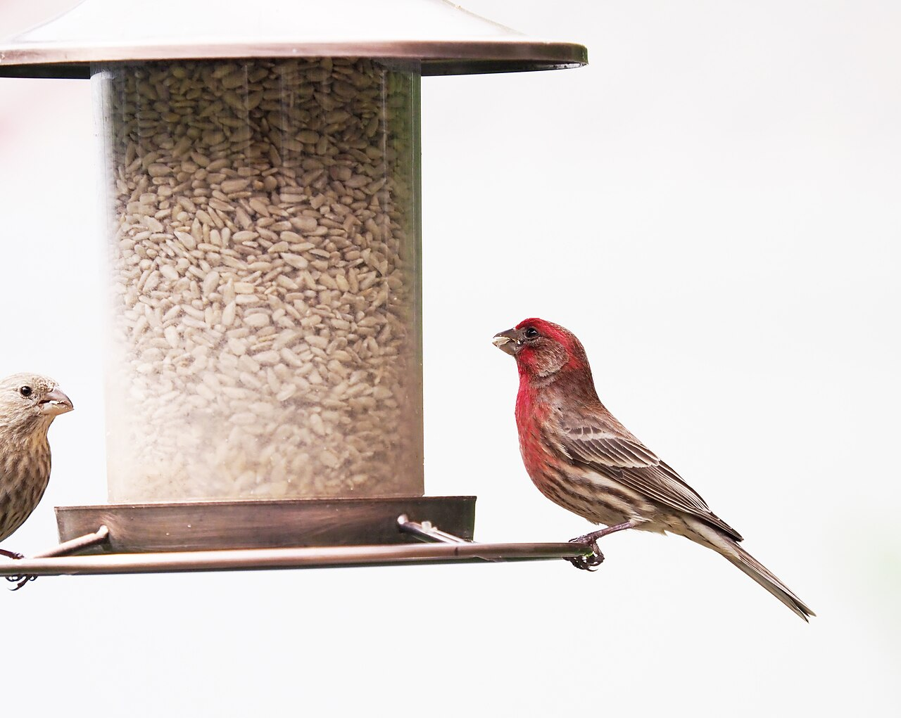

2026-06-11
The first thing a new birdwatcher learns is that the birds were always there. The sparrows working the hedge, the jay complaining from the fence, the small brown shape that crosses the yard at the same time every morning — they did not arrive when you started watching. You arrived. Birdwatching is less a hobby you take up than a sense you switch on, and once it is on, an ordinary walk to the mailbox runs a little longer because there is a wren in the mailbox hedge and wrens are worth thirty seconds of anybody's day.

Expertise can wait. The finest first field guide is a chair by a window and a feeder, or even a handful of seed scattered on a railing. The regulars will teach you the basics in a week: who is bold, who waits, who eats upside down, who arrives in a gang and who comes alone like an inspector. A cheap notebook by the window turns watching into birding. Date, bird, what it was doing. Three lines a day, and within a month you own a small record of a world that was running in parallel with yours all along.
Identification comes slower, and that is the fun of it. Begin with size and shape before color — a bird's silhouette at dawn is mostly silhouette. Then learn the voices, because in leafy months you will hear five birds for every one you see. The free recordings and range maps at All About Birds make this gentle: type in a rough description, listen to two or three songs, and the mystery singer in the oak usually introduces itself. Getting one bird right — really right, name and song and habit — feels out of all proportion to the effort, like being let in on a secret the neighborhood has been keeping politely.
Gear is the part beginners overthink. A modest pair of binoculars from a closet shelf is enough for the first year, and plenty of fine birders work with less. What cannot be bought is the habit of standing still. Birds read movement as weather: a person walking is a passing front, but a person stopped is furniture, and furniture gets ignored. Stop by a pond edge for four quiet minutes and the reeds repopulate — a heron unfolds, a blackbird lands two meters off, a grebe surfaces holding a fish and an opinion. The birding is in the waiting, and the waiting turns out to be restful in a way that scrolling never manages to be.
Timing sharpens everything. The hour after sunrise is the birds' morning rush — singing, feeding, arguing — and checking sunrise times before a weekend walk is the cheapest upgrade a beginner can make. Show up at dawn twice and you will see more than a month of midday strolls ever showed you. Evenings have their own cast: swifts and swallows working the sky, the first owls clearing their throats.
Give the hobby a season and it starts keeping a calendar for you. Spring arrives not on a date but as a returning song outside the window — the migrants come back in sequence, each species on its own schedule, and a birder learns to hear the year turn. Summer belongs to the fledglings, all elbows and appetite, learning the feeder's rules in public. Autumn moves the hawks along the ridges in long, circling kettles that can stop a whole footpath of strangers and point them all at the same sky. Winter, which looked empty, fills with visitors from the far north that treat your garden as the warm south. A person who watches birds never again experiences weather as mere backdrop; every front that crosses is carrying somebody, and the notebook fills with arrivals and departures like a small airport's ledger. It is the cheapest form of travel there is: stay exactly where you are, and let the world commute past you, twice a year, in feathers.
Most birders end up keeping a list, and a list does something sneaky to a person's geography. The local park stops being "the park" and becomes the place where the kingfisher works the far bank in October. A work trip gains a free hour at a strange city's river. Vacations bend, gently, toward wetlands. None of this costs much. A year of birding runs on a feeder's worth of seed, one pair of binoculars, and a notebook — and pays out in a permanently upgraded version of every place you already go.
Start tomorrow morning. Window, chair, notebook, whatever flies in. The birds have been rehearsing outside your house for years. It is nice to finally be in the audience.